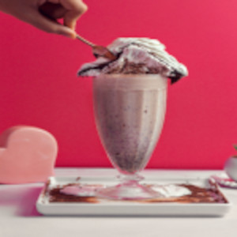

O milk-shake (ou milkshake) é uma bebida gelada e cremosa batida à base de leite e sorvete, muito popular no mundo inteiro
A primeira menção ao termo milkshake impressa na história foi em 1885. Naquela época, a bebida era um remédio e tônico para adultos feito com leite, ovos, uísque e gelo. Se o cliente gostasse do sabor, o atendente adicionava xaropes de chocolate ou morango
Seleção Doces & CIA